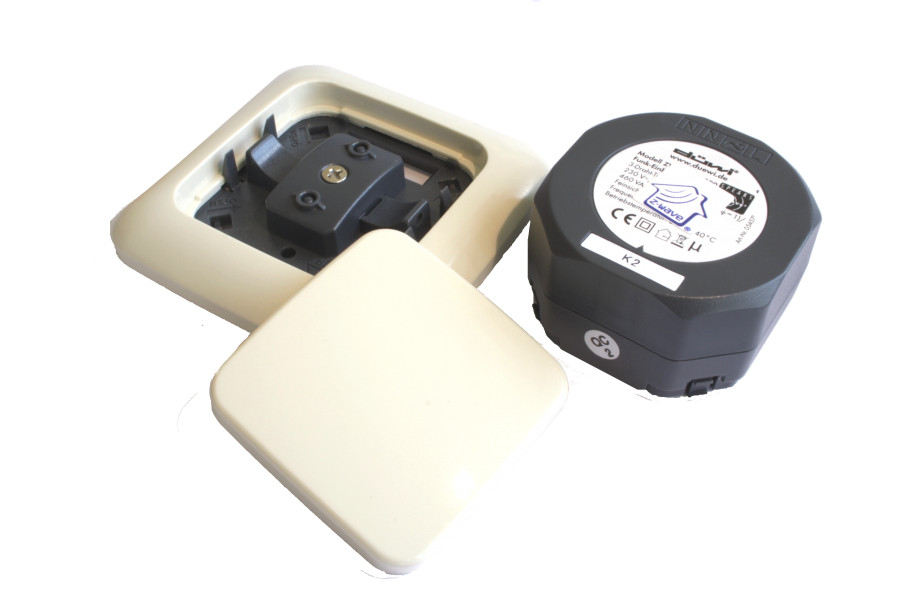
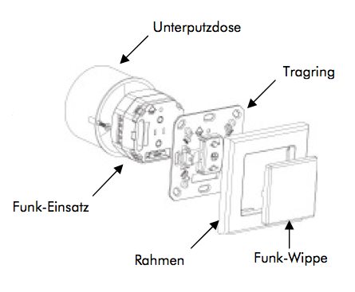
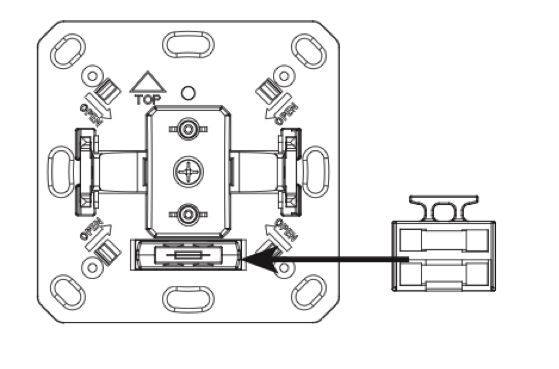

ZME_05436
Firmware Version : 1.8 |
 |
Kurzinfo
A Dieses Gerät ist ein Z-Wave-Aktor. Nachdem der Controller in den Inklusion-Modus gesetzt wurde, bestätigt dreimal Drücken auf die Bedienwippe des Schalters die Inclusion. Eine grün leuchtende LED bestätigt den Erfolg.
Nachdem Sie den Controller in den Inklusion-Modus gesetzt haben, drücken Sie dreimal hintereinander die Bedienwippe des Schalters. Eine grün leuchtende LED bestätigt die erfolgreiche Inklusion des Schalter in das Netzwerk des Controllers.
Weitergehende Informationen finden sich in den jeweiligen Abschnitten dieses Handbuches.
Was ist Z-Wave?
Dieses Produkt entspricht dem Z-Wave-Standard. Z-Wave ist der internationale Funkstandard zur Kommunikation von Geräten im intelligenten Haus. Z-Wave-Geräte funken in Europa auf der Frequenz von 868.42 MHz.Z-Wave ermöglicht eine sichere und stabile Kommunikation indem jede Nachricht vom Empfänger rückbestätigt wird (Zweiwege-Kommunikation) und alle netzbetriebenen Geräte Nachrichten weiterleiten (Routing) können, wenn eine direkte Funkbeziehung zwischen Sender und Empfänger gestört ist.
Dank Z-Wave können Produkte unterschiedlicher Hersteller miteinander in einem Funknetz verwendet werden. Damit ist auch dieses Produkt mit beliebigen anderen Produkten anderer Hersteller in einem gemeinsamen Z-Wave Funknetz einsetzbar.
Z-Wave unterscheidet zwischen Controllern und Slaves. Slaves sind entweder Sensoren S, die Daten ermitteln oder Aktoren A, die Aktionen ausführen (Sensoren und Aktoren sind mitunter in einem Gerät vereint). Controller sind entweder statische netzgespeiste Controller C (auch IP-Gateways genannt) oder mobile batteriebetriebene Controller (Fernbedienungen, Batteriewandschalter)R. Damit ergeben sich eine Reihe prinzipieller Kommunikationsmöglichkeiten in einem Z-Wave-Netz:

- Controller steuern Aktoren.
- Aktoren melden Änderungen ihres Schaltzustandes
- Sensoren melden Messwerte oder Statusänderungen an Controller
- Sensoren steuern Aktoren direkt bei Ereignissen
- Aktoren steuern andere Aktoren
- Fernbedienungen erzeugen Ereignisse in einem statischen Controller, die zum Beispiel zum Steuern von Szenen genutzt werden
- Fernbedienungen steuern Aktoren
Controller können in einem Z-Wave Netzwerk zwei unterschiedliche Rollen einnehmen. Es gibt immer genau einen Primärcontroller der das Netzwerk steuert und Geräte in das Netzwerk inkludiert oder aus dem Netzwerk exkludiert. Dieser Controller kann weiter Nutzerfunktionen - zum Beispiel Tasten - besitzen. Alle anderen Controller mit Nutzerfunktionen erfüllen keine Managementaufgaben. Sie heißen Sekundärcontroller. Trotzdem verfügen sie - sozusagen als Backup - über alle notwendigen Informationen über das Netz. Das Übersichtsbild zeigt, das - batteriegestützt - Sensoren nicht direkt mit - batteriebetriebenen - Fernbedienungen kommunizieren. Sie senden nur Daten an statische Controller oder steuern Aktoren direkt.
Produktbeschreibung
Der Z-Wave.Me Wandeinsatz ist ein Funk-Aktor zum Steuern von Motoren für Jalousien, Markisen oder Rollläden bis zu einer Motorleistung von 1800 W an 230 V. Das Gerät wird als Set mit Schalteinsatz, Bedienwippe und Montagerahmen kompatibel zur Schalterserie Everlix in Farbe weiß des Herstellers REV / Duewi geliefert. Der Unterputzeinsatz kann aber auch in Wanddosen, Fehlböden oder in Lampen eingebaut werden. Eine Schaltaktion an den lokalen Tasten wird zu einem eventuell vorhandenen IP-Gateway gemeldet. Die Schaltwippen können ebenfalls zum Aktivieren von Szenen in einem IP Gateway verwendet werden. Das Gerät ist für ein Dreileitersystem vorgesehen, d.h. es muss zur Installation ein Neutralleiter (blau) vorhanden sein.
Sicherheitshinweis
Lesen Sie dieses Handbuch vor der Installation!
Achtung! Dieses Gerät wird mit 230 V Netzspannung betrieben. Beachten Sie die Sicherheitshinweise während der Installation. Vor Beginn der Installation müssen alle Anschlussleitungen potentialfrei sein. Weiterhin muss sichergestellt sein, dass während der Installation niemand die Spannung wieder zuschalten kann (Sicherung wieder aktivieren). Elektrische Arbeiten dürfen nur von einer Elektrofachkraft in Übereinstimmung mit den geltenden Regeln und Vorschriften durchgeführt werden.
Verwenden Sie das Gerät auf keine andere Weise als im Handbuch angegeben. Der Hersteller übernimmt keine Garantie für unsachgemäße Bedienung.
Installationsanleitung
Das Gerät passt in standardisierte 60 mm Unterputzdosen. Nachdem der Funk-Einsatz elektrisch angeschlossen wurde, kann er mit der Montageplatte mit Hilfe der beigelegten Schrauben auf der Wanddose fixiert werden. Der Montagerahmen wird auf die Montageplatte aufgesteckt und die Installation durch Aufdrücken der Schaltwippe vervollständigt. Bitte beachten Sie die Einbaurichtung (Pfeil nach oben auf der Montageplatte). Der Schaltaktor kann auch ohne lokale Bedienmöglichkeit innerhalb der Wanddose betrieben werden. Montageplatte, Rahmen und Schaltwippe sind dann unnötig.

Die untenstehende Abbildung zeigt die elektrische Verschaltung des Aktors. Die Stromzuführung vom Schaltkasten wird auf die Kontakte N und L gelegt. Der Kontakt S ist der geschaltete Kontakt, der mit dem elektrischen Verbraucher verbunden wird. Für zweite Ableitung vom Verbraucher ist eine zweite Schaltklemme N vorhanden. Beide Schaltklemmen N sind permanent miteinander verbunden.

Die Elektronik des Aktors ist durch eine Feinsicherung geschützt, die über einen entsprechenden Steckkontakt zugänglich ist. In diesem Stecker befindet sich über der eigentlichen Sicherung eine Ersatzsicherung.

Verhalten des Gerätes im Z-Wave Netz
I Im Auslieferungszustand ist das Gerät mit keinem Z-Wave-Netz verbunden. Damit es mit anderen Z-Wave Geräten kommunizieren kann, muss es in ein bestehendes Z-Wave Netz eingebunden werden. Dieser Prozess wird bei Z-Wave Inklusion genannt. Geräte können Netzwerke auch wieder verlassen. Dieser Prozess heißt bei Z-Wave Exklusion. Beide Prozesse werden von einem Controller gestartet, der dazu in einen Inklusion- bzw. Exklusion-Modus geschaltet werden muss. Das Handbuch des Controllers enthält Informationen, wie er in diese Modi zu schalten ist. Erst wenn der Controller des Z-Wave Netzes im Inclusion-Modus ist, können Geräte hinzugefügt werden. Das Verlassen des Netzes durch Exklusion führt zum Rücksetzen dieses Gerätes in den Auslieferungszustand.
Der Auslieferungszustand wird durch abwechselndes rot/grünes Blinken der LED angezeigt. Die Bestätigung der Inclusion an diesem Gerät erfolgt durch schnelles dreifaches Drücken auf eine der beiden Tasten. Die erfolgreiche Inclusion wird durch eine grüne LED quittiert. Danach erlischt die LED.
Die Bestätigung der Exclusion erfolgt an diesem Gerät durch schnelles dreifaches Drücken auf eine der beiden Tasten.
Bedienung des Gerätes
Der Schalteinsatz wird über die Schaltwippen oder per Funk (Kommunikationmuster 1 und 4) geschaltet. Wenn der Schalteinsatz in der richtigen Orientierung eingebaut wurde, bewirkt der Druck auf den oberen Wippenteil das Hochfahren der Jalousie. Ein Druck auf den unteren Wippenteil führt zum Schließen der Jalousie. Durch kurzes Drücken der entgegengesetzten Richtung wird die Jalousie gestoppt. Ebenfalls möglich ist ein Drücken und Halten der Schaltwippe bis die gewünschte Position erreicht ist.
Das Gerät kann Statusänderungen an einen Controller melden (Kommunikationsmuster 2) und selbst auch andere Z-Wave-Aktoren über Funk steuern (Kommunikationsmuster 5). Wenn diese anderen Geräte ebenfalls Schaltaktoren sind, erfolgt die Bedienung analog zur lokalen Bedienung. Der Aktor kann aber auch über entsprechend gesetzte Konfigurationsparameter 13 und 14 entfernte Dimmer dimmen. Die Dimmfunktion wird erreicht, indem die Schaltwippe gedrückt gehalten wird. Weiterhin kann der Doppelklick auf die Schaltwippe mit einer Steuerfunktion für ein oder mehrere entfernte Geräte belegt werden.
Eine Sonderfunktion kann durch Setzen des Konfigurationsparameters 2 realisiert werden. Hier wird ein geschalteter Verbraucher nach einer definierten Zeit automatisch wieder ausgeschaltet.
Kinderschutz
Das Gerät verfügt über einen Kinderschutzmechanismus. Dabei wird die lokale Bedienung über Tasten gesperrt und es ist nur noch eine Bedoenung über Funk möglich.
Die Aktivierung eines Kinderschutzmodus kann nur via Funk, z.B. durch eine Funkfernbedienung, erfolgen. Durch 3-maliges Drücken der Taste kann diese Sicherung deaktiviert werden. Nach 5 Sekunden ohne Aktion wird der Kinderschutzmodus automatisch wieder aktiviert.
Bedeutung der LED-Signale
- Rot/ Grünes Blinken: Gerät nicht programmiert
- Rotes Blinken: Gerät fehlerhaft/ Konfiguration nicht erfolgreich
- Grünes Blinken: Konfigurationsmodus aktiv
- Grün oder kein Licht: Konfiguration erfolgreich
Assoziationen - wie werden andere Geräte gesteuert?
A Z-Wave Geräte können andere Geräte direkt steuern. Diese direkte Steuerung heißt in Z-Wave Assoziation. In den steuernden Geräten muss dazu die Geräte-ID des zu steuernden Gerätes hinterlegt werden. Dies erfolgt in sogenannten Assoziationsgruppen. Eine Assoziationsgruppe ist immer an ein Ereignis im steuernden Gerät gebunden (Tastendruck oder Auslösen eines Sensors). Bei Eintritt dieses Ereignisses wird an alle in einer Assoziationsgruppe hinterlegten Geräte ein Steuerkommando gesendet.
Assoziationsgruppen:
| 1 | (max. Anzahl Geräte: 14) |
| 2 | (max. Anzahl Geräte: 14) |
| 3 | (max. Anzahl Geräte: 14) |
Konfigurationseinstellungen
Z-Wave Produkte können direkt nach der Inklusion im Netz verwendet werden. Durch Konfigurationseinstellungen kann das Verhalten des Gerätes jedoch noch besser an die Anforderungen der Anwendung angepasst und zusätzliche Funktionen aktiviert werden.
WICHTIG: Manche Steuerungen erlauben nur die Konfiguration von vorzeichenbehafteten Werten zwischen -128 und 127. Um erforderliche Werte zwischen 128 und 255 zu programmieren, muss der gewünschte Wert minus 256 eingegeben werden. Beispiel: um einen Parameter auf einen Wert von 200 zu setzen, müsste der Wert 200-256 = -56 eingegeben werden, wenn nur positive Werte bis 128 akzeptiert werden. Bei Werten von 2 Byte Länge wird die gleiche Logik angewandt: Werte über 32768 werden als negative Werte angegeben
| Wert | Beschreibung |
|---|---|
| 0 | |
| 1 | |
| 2 | |
| 4 | |
| 3 | (Voreingestellt) |
| Wert | Beschreibung |
|---|---|
| 0 | (Voreingestellt) |
| 1 — 65535 |
| Wert | Beschreibung |
|---|---|
| 0 | (Voreingestellt) |
| 1 | |
| 2 | |
| 3 |
| Wert | Beschreibung |
|---|---|
| 0 | |
| 1 — 255 | (Voreingestellt 60) |
| Wert | Beschreibung |
|---|---|
| 0 | |
| 1 — 255 | (Voreingestellt 60) |
| Wert | Beschreibung |
|---|---|
| 0 | (Voreingestellt) |
| 1 — 232 |
| Wert | Beschreibung |
|---|---|
| 0 | (Voreingestellt) |
| 1 |
| Wert | Beschreibung |
|---|---|
| 0 | (Voreingestellt) |
| 2 | |
| 1 |
| Wert | Beschreibung |
|---|---|
| 0 | (Voreingestellt) |
| 1 |
| Wert | Beschreibung |
|---|---|
| 1 — 100 | (Voreingestellt 50) |
| Wert | Beschreibung |
|---|---|
| 0 | (Voreingestellt) |
| 1 |
| Wert | Beschreibung |
|---|---|
| 0 | |
| 1 | (Voreingestellt) |
| 2 |
| Wert | Beschreibung |
|---|---|
| 0 | |
| 4 | Schaltkommandos Ein und Aus mittels 'Basic' und 'SwitchMultilevel' Kommando (Voreingestellt) |
| 1 | Schaltkommandos Ein und Aus mittels 'Basic' Kommando |
| 2 | 'Switch All" Kommando |
| 3 | Szenenaktivierung |
| 5 |
| Wert | Beschreibung |
|---|---|
| 0 | (Voreingestellt) |
| 4 | Schaltkommandos Ein und Aus mittels 'Basic' und 'SwitchMultilevel' Kommando |
| 1 | Schaltkommandos Ein und Aus mittels 'Basic' Kommando |
| 2 | 'Switch All" Kommando |
| 3 | Szenenaktivierung |
| 5 |
| Wert | Beschreibung |
|---|---|
| 1 | (Voreingestellt) |
| 2 | |
| 255 |
| Wert | Beschreibung |
|---|---|
| 0 | (Voreingestellt) |
| 1 | |
| 2 |
| Wert | Beschreibung |
|---|---|
| 0 | (Voreingestellt) |
| 1 |
Kommandoklassen
Unterstützte Kommandoklassen- Basic (Version 1)
- Binary Switch (Version 1)
- Multilevel Switch (Version 3)
- Version (Version 1)
- Indicator (Version 1)
- All Switch (Version 1)
- Multi Channel Association (Version 2)
- Configuration (Version 1)
- Manufacturer Specific (Version 1)
- Protection (Version 1)
- Node Naming and Location (Version 1)
- Association (Version 2)
- Multi Channel (Version 2)
- Scene Activation (Version 1)
- Scene Actuator Configuration (Version 1)
- Scene Controller Configuration (Version 1)
- Basic (Version 1)
- Multilevel Switch (Version 3)
- All Switch (Version 1)
- Multi Channel (Version 2)
- Scene Activation (Version 1)
Technische Daten
| Stromversorgung | 230V ~50-60 Hz |
| Schaltbare Lasten | Motoren bis 1800 W |
| Schutzklasse | 20 |
| Explorer Frames | Ja |
| SDK | 4.54 pl1 |
| Geräteart | Slave with routing capabilities |
| Allgemeiner Z-Wave-Gerätetyp | Multilevel Switch |
| Spezieller Z-Wave-Gerätetyp | Motor Control Class C |
| Router | Ja |
| FLiRS | Nein |
| Firmware Version | 1.8 |
Erläuterung Z-Wave-spezifischer Begriffe
- Controller... ist ein Z-Wave-Gerät mit erweiterten Fähigkeiten zur Verwaltung eines Netzes. Dies sind in der Regel Gateways oder Fernbedienungen. Batteriegespeiste Wandschalter können auch Controller sein.
- Slave... ist ein Z-Wave-Gerät mit erweiterten Fähigkeiten zur Verwaltung eines Netzes. Es gibt Sensoren, Aktoren und auch Fernbedienungen als Slaves.
- Primärcontroller (engl. Primary Controller)... ist der zentrale Netzverwalter des Z-Wave-Netzes.
- Inklusion (eng. Inclusion)... ist der Prozess des Einbindens eines neuen Gerätes ins Z-Wave-Netz.
- Exklusion (engl. Exclusion)... ist der Prozess des Entfernens eines Gerätes aus dem Z-Wave-Netz.
- Assoziation (engl. Association)... ist eine Steuerbeziehung zwischen einem steuernden und einem gesteuerten Gerät. Die Information dazu wird im steuernden Gerät in einer Assoziationsgruppe hinterlegt.
- Wakeup Notifikation (engl. Wakeup Notification) ... ist eine spezielle Funknachricht, mit der ein batteriegespeistes Gerät bekanntmacht, daß es im Aufwachstatus ist und Z-Wave-Nachrichten empfangen kann.
- Node Information Frame... ist eine spezielle Funknachricht, mit der ein Z-Wave-Gerät seine Geräteeigenschaften bekanntgibt.
Entsorgungshinweis
Dieses Gerät enthält keine Batterien.
Das ist ein elektrisches Gerät. Es kann kostenfrei bei entsprechenden Annahmestellen abgegeben werden.